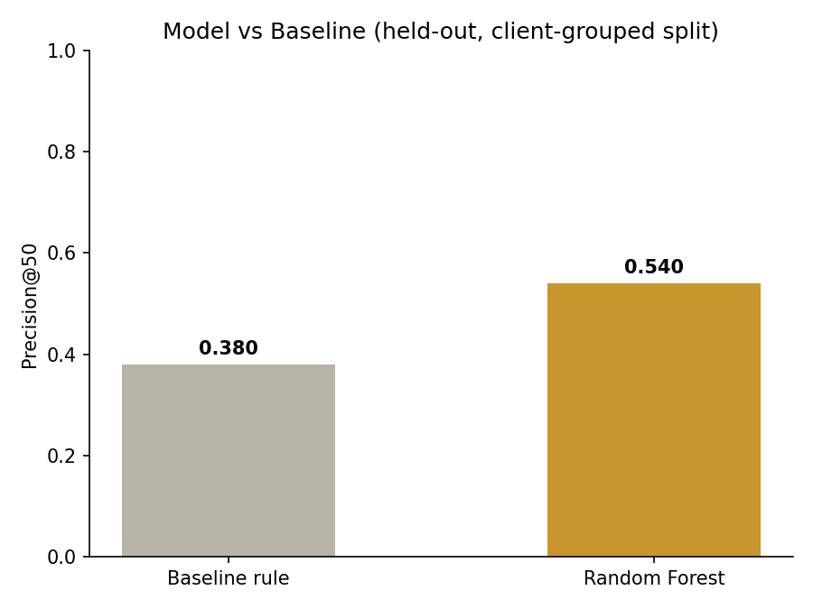
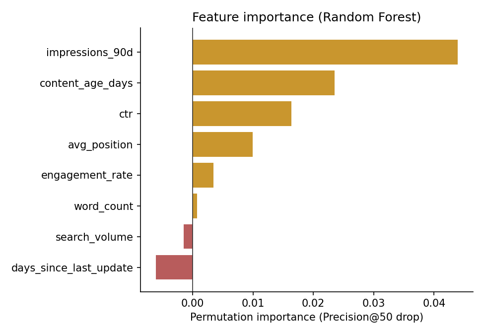

Abstract. With thousands of content pages and limited review capacity, which pages should a content team check first? I built a ranked scoring system that combines a hand-written baseline rule with a Random Forest classifier trained on eight observable, pre-decision signals. Evaluated on a client-grouped, leakage-checked split, the model reached a Precision@50 of 0.540 versus the baseline rule's 0.380 — a 1.42x improvement in getting genuinely declining pages into the top of the review queue. The result is directional and decision-support only, not causal, and is reported with that framing throughout.
A website can have thousands of content pages and no reliable way to know which ones are quietly losing traffic. Manual review doesn't scale past a handful of pages per cycle, so the real decision this work supports is: given limited reviewer capacity, which pages should a content strategist check first?
The action this ranking feeds is direct: a reviewer opens the top-ranked pages and decides whether to refresh, expand, or leave them. Getting the ranking wrong has a real cost either way — reviewer time wasted on pages that were never declining, or a genuinely declining high-traffic page missed for weeks while it keeps losing visibility.
This work uses the FlyRank ML Internship starter release (content_refresh_anonymized.csv), a public-safe extract of 30,000 content-page rows across 32 anonymized clients, with pre-decision signals only — no product health flags, no post-hoc labels. No client names, domains, or private queries appear anywhere in this paper or the underlying notebooks.
The label used is a proxy, not an observed future outcome: is_declining = (trend_direction == "down"), a rule computed on the current window rather than a genuine past-to-future prediction. This limitation is treated as a first-class caveat throughout, not a footnote.
Excluded by design: the starter release deliberately omits any product decision flags (e.g. "needs CTR fix" labels) that would leak the answer into the features — a constraint confirmed directly in earlier notebook work, where feeding a label-derived signal (trend_pct) into a model pushed Precision@50 to a suspicious 1.000, the signature of leakage rather than a real result.
Two candidate signals were checked directly against the data, each with a bucketed table and a one-word verdict, before either went into a scoring rule:
| Signal | Verdict | Finding |
|---|---|---|
| Staleness (days since update) vs. decline rate | MIXED | Decline rate rises from 51.1% (0–30 days) to 61.1% (91–180 days), then drops to 46.7% at 181–365 days on a much smaller, less reliable sample. |
| CTR vs. position tier | CONFIRMED | Mean CTR rises monotonically from 0.150 (deep) to 1.484 (top 3), across all five tiers, each with a large sample (min n=1,319). |
The MIXED verdict directly shaped the baseline rule: staleness was only used within the 31–180 day window where the pattern actually held, not as a blanket signal.
A hand-written rule combining visibility, moderate staleness, and CTR-vs-tier-expectation: score = impressions_90d × is_moderately_stale × (1 / ctr_vs_tier_avg), with a single reason code (STALE_AND_CTR_UNDERPERFORM) and an action label (review_for_refresh / monitor).
A Random Forest classifier (300 trees, max depth 8, class-balanced) trained on eight pre-decision features: impressions_90d, days_since_last_update, avg_position, ctr, word_count, engagement_rate, content_age_days, search_volume. Random Forest was chosen over plain Logistic Regression because it can weigh multiple signals against each other and capture non-linear interactions the fixed baseline formula cannot, while staying robust to the noisy, small-sample buckets already identified in the signal check above.
A client-grouped 75/25 split (GroupShuffleSplit on client_id), not a random row split. A random split would let a client's other pages leak into both train and test; since a client's pages share systematic traits (industry, content style, baseline traffic), that would inflate the score without proving real generalization to a client the model has never seen. The split produced 22,885 train rows across 24 clients and 7,115 test rows across 8 clients, with confirmed zero client overlap.

The Random Forest reached Precision@50 = 0.540 against the baseline rule's 0.380 — a 1.42x improvement in how many of the top 50 ranked pages were genuinely declining, on a split where no client's data crossed between training and testing.

impressions_90d and content_age_days dominate the model's decisions. Notably, days_since_last_update shows negative importance — directly confirming the earlier MIXED signal verdict: staleness alone is not a reliable predictor once other signals are available to the model.
Among the model's false positives (top-50 pages predicted declining that weren't), nearly all shared ctr = 0.0 with small-to-moderate impressions — the model over-weights a zero-CTR reading as a red flag, but some zero-CTR pages are simply new, not declining. Among false negatives (genuine decliners scored lowest), the same ctr = 0.0 pattern appears, but paired with very low impressions_90d — the model deprioritizes low-visibility pages even when they are genuinely declining, since low volume looks unremarkable regardless of trend. Both error types cluster around the same blind spot: very low-traffic, zero-CTR pages, where the underlying signal is thin either way.
Full notebooks and code: github.com/humaaslam46/Internship-ml
notebooks/01_first_look_and_discovery.ipynb — initial pipeline run and discoverywork/notebooks/w01_research_question.ipynb — lane selection and framingwork/notebooks/w02_ml_task_framing.ipynb — task type, target, and success metricwork/notebooks/w03_data_contract.ipynb — data contract, verification queries, leakage trapwork/notebooks/w04_baseline_score.ipynb — signal checks and baseline rulework/notebooks/w05_model.ipynb — model, validation, and results in this paper